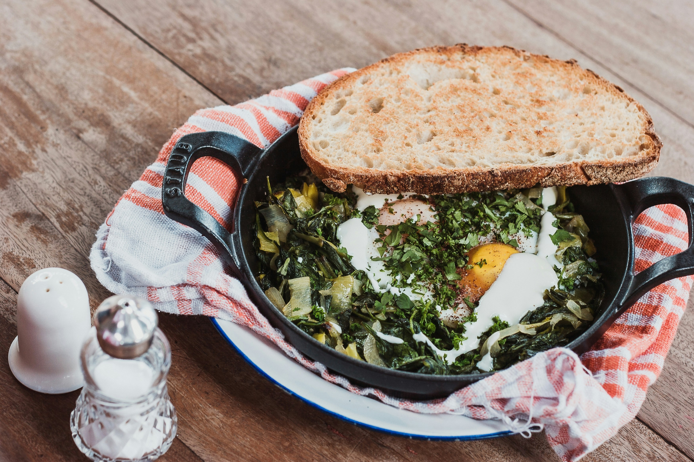
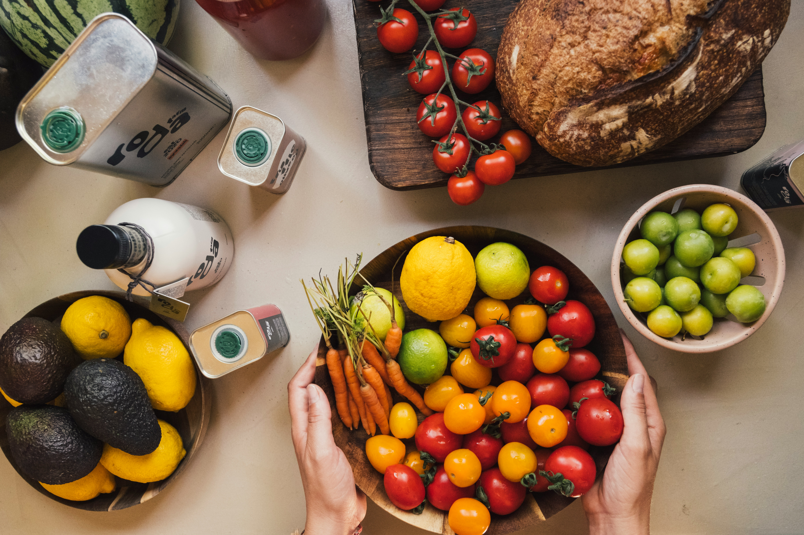
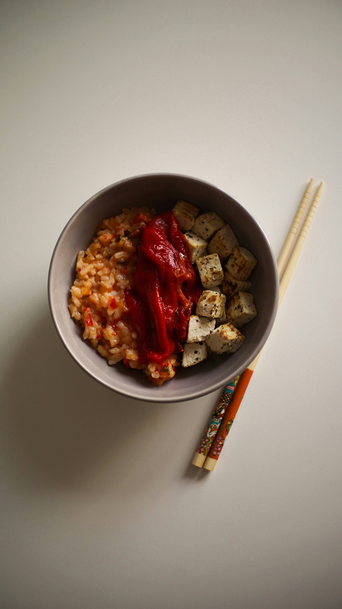

Greens & Eggs with Toast
A nourishing breakfast with eggs, sautéed greens, and crusty bread.
15 Min
See what you have.
Know what to make.
Get Started2 items expiring soon
Get cooking with these easy-to-follow recipes.

A nourishing breakfast with eggs, sautéed greens, and crusty bread.
15 Min
A flavorful bowl with tofu, rice, and roasted red peppers.
25 Min